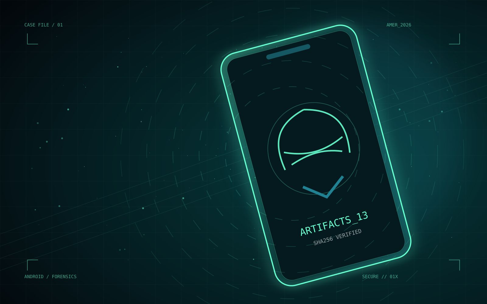

01 / HACKVISER↗

VALIDATED SKILLS
CAPT
Certified Associate Penetration Tester
HELLO, I’M AMER JWEIHAN CYBERSECURITY STUDENT
I investigate what others overlook.
Ethical hacking, digital forensics
and building safer systems.
I’m a cybersecurity student at Al Hussein Technical University, turning curiosity into hands-on security work.
I work across penetration testing, digital investigations, secure networking and threat modeling. I’m driven by a simple idea: to make a system stronger, first understand it completely.
Eight investigations. Eight signals in the dark. Select any floating screen to expand its case file without leaving the vault.
VIEW ALL CASE FILES ↗A collection of investigations, experiments, systems and lessons learned along the way.

A unified Android extraction and investigation workflow spanning 13 artifact categories.
Real skills are built by showing up, asking questions and doing the work.
Certified Associate Penetration Tester

Certified Web Security Expert
Certified Cybersecurity Educator Professional
OPEN TO INTERNSHIPS & COLLABORATION
Have a project, an opportunity, or a question?
Let’s start a conversation.